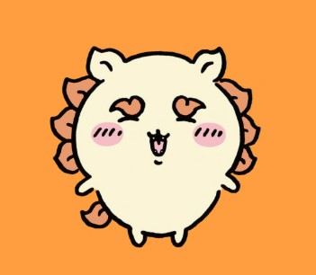

The hardworking ramen apprentice Shisa is inspired by the traditional lion-dog guardians of Okinawa, Japan. They work as an assistant at the ramen shop Rou under Ramen Yoroi-san, whom they greatly admire. Personality: Earnest, hardworking, respectful, and enthusiastic. Fun fact: Shisa passed a difficult super part-time worker qualification exam and dreams of enjoying drinks with their beloved ramen master. Character list!